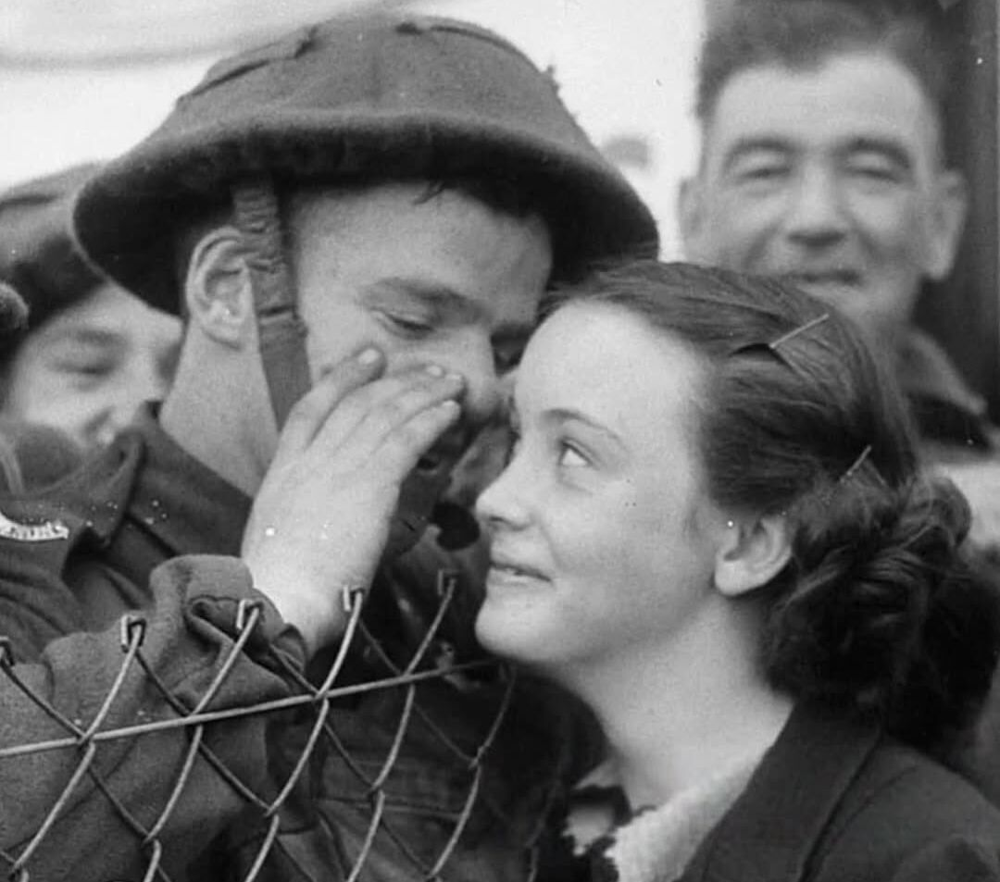

A Letter from the Heart of War… A Promise Left Unfulfilled!
In 1939, Europe was preparing for one of the greatest wars in history. Yet, in the pocket of a young
soldier, a letter was found… one unlike anything written about battles or victories.
It read:
"When the war ends, we will get married. The earth will bloom like your face, and you will be the mother of the most beautiful little girl in the universe."
These words were not mere poetic musings. They represented a simple dream shared by millions of young men and women at that era: a small home, marriage, children, and the return of peace to their lives.
But history was not always merciful to such dreams.
Over the span of just six years, more than 60 million people lost their lives, countless families were torn apart, and many promises remained unfulfilled forever.
During those years, personal letters were often the sole bridge connecting soldiers to their loved ones. This is why historians study these letters with such care: because they reveal what people were truly afraid of losing.
Military glory was rarely what occupied their minds most of the time.
Rather, it was home.
The waiting heart.
And the life they longed to return to.
The cruelest part of war is that it doesn't just kill soldiers… it also kills the future they had begun to imagine.
He was dreaming of a home and a little daughter…
While history was preparing a grave for him.
Oh, the irony of humanity:
He writes about marriage in a letter tucked into his pocket, while the world was writing his date of death.
War doesn't just rob you of your life; sometimes, it robs you of the life you never even got the chance to live.
And perhaps this is why some letters are more tragic than graves…
Because a grave brings a story to an end, while a letter remains as a witness to a future that was never born. 🖤
